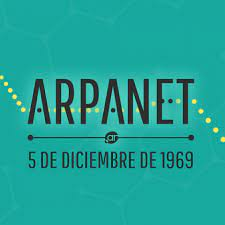
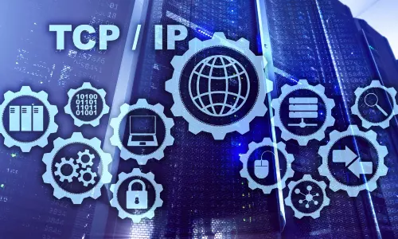
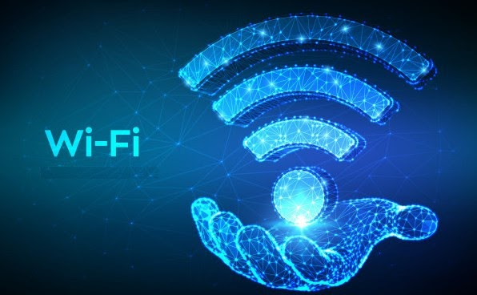

ARPAnet
Internet tiene sus orígenes en la creación de ARPAnet (Red de la Agencia de Proyectos de Investigación
Avanzada), una red militar creada por Estados Unidos con el fin de
distribuir estratégicamente la información confidencial en caso de un ataque nuclear. El primer nodo de
ARPAnet se estableció en la UCLA en 1969, y a partir de entonces se fue extendiendo entre la comunidad
académica y también en las redes internas de grandes compañías.

LAN
Local Area Network (red de área local), es una red que se utiliza para conectar equipos de una compañía u
organización y remota de 1970. Con una LAN, los empleados de una compañía pueden:
- Intercambiar información
- Comunicarse
- Acceder a diversos servicios
Por lo general, una red de área local conecta equipos (o recursos, como impresoras) a través de un medio de
transmisión cableado (frecuentemente pares trenzados o cables coaxiales) dentro de un perímetro de
unos cien metros.
Ethernet
La idea original de Ethernet nació del problema de permitir que dos o más host utilizaran el mismo medio y
evitar que las señales interfirieran entre sí. La primera LAN del mundo fue la versión original de Ethernet.
diseñada por Robert Metcalfe y sus compañeros de Xerox. Metcalfe quería que Ethernet fuera un estándar
compartido a partir del cual todos se podiesen beneficiar, de modo que se lanzó como estándar abierto.
TCP
El protocolo NCP utilizado en aquel entonces no permitía la verificación de errores por sistema, solo se
podía utilizar con ARPANET cuya infraestructura estaba controlada correctamente. Por este motivo, Bob Kahn,
quien llegó a ARPA en 1972, comenzó a trabajar en la creación de un nuevo protocolo denominado TCP, cuyo
objetivo era enrutar los datos de la red al fragmentarlos en paquetes más pequeños. En 1973, se le pidió a
Vinton Cerf que colaborara en el proyecto. Así se creó TCP.

UDP
Diseñado por David P. Reed en 1980; User Datagram Protocol (UDP) es un protocolo del nivel de transporte
basado en el intercambio de datagramas. Su desventaja radica en que no asegura que la información llegue al
destino (a diferencia de TCP que sí lo hace).

IPv4
IPv4 es la versión 4 de la IP, y constituye la primera versión que es implementada de forma extensiva. Es el
principal protocolo utilizado en el nivel de red del modelo TCP/IP para Internet. Fue descrito inicial mente
en el RFC 791 elaborado por la Internet Engineering Task Force (IETF) en 1981. IPv4 utiliza direcciones de
32 bits (4 bytes) que limita el número a 4.294.967.296 direcciones únicas y posibles de utilizar.
DNS
Para identificar los equipos conectados a la red es necesaria una dirección IP (Internet Protocol Adress) que
sea única. Esta dirección consta de cuatro números comprendidos entre 0 y 255 que están separados entre sí
por puntos. Por motivos de simplificación (para los humanos), Paul Mockapetris crea el sistema de nombres de
dominio (DNS domain name system), que es una secuencia de caracteres que sustituye a las direcciones
numéricas. Aparte, este sistema cambia de forma dinámica y automática.
DNS
El sistema de nombres DNS, utilizado actualmente, se implementó en este año para remediar la falta de
flexibilidad inherente en archivos host, en los que los nombres de los equipos y sus respectivas direcciones
se almacenaban en archivos de texto que debían actualizarse manualmente.
NSFNet
La NSF (National Science Fundation) crea su propia red informática llamada NSFnet.
World Wide Web (WWW)
En el Centro Europeo de Investigaciones Nucleares (CERN), Tim Berners Lee dirigía la búsqueda de un sistema
de almacenamiento y recuperación de datos. Berners Lee retomó la idea de Ted Nelson de usar hipervínculos.
Robert Caillau cooperó con el proyecto y enque en 1990 deciden ponerle un nombre al sistema y lo llamarón
World Wide Web (WWW) o telaraña mundial.
WAN
Wide Area Network (red de área amplia), es una red de computadoras que cubre una gran área geográfica, a
menudo un país o continente. La historia de la WAN comienza en 1993 cuando Lawrence Roberts y Thomas Merrill
conectan dos ordenadores, un DX-2 en Massachusetts con un Q-33 en California, a través de una línea
telefónica de baja velocidad, creando la primera red de área amplia (WAN).
Internet Explorer
Hasta 1995 Microsoft no lanzó la primera versión de su propio navegador, Internet Explorer (IE). Técnicamente
estaba muy por detrás de Navigator Netscape, pero tenía una particularidad que lo hacía muy atractivo: ¡Era
gratuito! Por lo que superó a su competencia, Netscape, quien intentó volver a la cima haciendo gratuito su
navegador; pero Microsoft no se quedó de los brazos cruzados e incluyó a IE como elemento en su sistema
operativo Windows, lo que fue la puntada final para Netscape.
Internet de las cosas
Internet of things (IoT) es un concepto que se refiere a la interconexión digital de objetos cotidianos con
Internet; de modo que puedan ser gestionados por otros equipos, de la misma manera que si lo fuesen por
seres humanos. La idea de este proyecto es conectar absolutamente tod. a Internet, de forma que se pueda
saber todo lo que hace una persona para su beneficio, Un ejemplo muy común suele ser el de comprar una
medicina; al llegar a la farmacia, ya se tiene lista en la caja gracias al IoT.
WiFi
En 1999 se unieron varias empresas para crear la actualmente llamada Alianza Wi-Fi. El objetivo de la misma
fue designar una marca que permitiese fomentar más fácilmente la tecnología inalámbrica y asegurar la
compatibilidad de equipos. De esta forma, en abril de 2000 se certifica la interoperabilidad de equipos
según la norma IEEE 802.11b, bajo la marca Wi-Fi. La familia de estándares 802.11 ha ido evolucionando desde
su creación hasta ser como actualmente es.

IPv6
La limitación de IPv4 motivó la creación de IPv6 (IPv5 fue un modelo experimental) como reemplazo, y no fue
hasta el año pasado (2016) que se empezó la implementación en algunos dispositivos. Diseñado por Steve
Deering y Craig Mudge. El nuevo estándar mejorará el servicio globalmente; por ejemplo, proporcionará a
futuras celdas telefónicas y dispositivos móviles sus direcciones propias y permanentes. IPv6 admite
340.282.366.920.938.463.463.374.607.431.768.211.456 (cerca de 670 mil billones)
Cubrimineto De Distancia
Red Lan
La cobertura promedio de estas redes ronda los 5 km, en tanto que se pueden extender con coberturas de entre 1 km a 25 km, en función de las configuraciones de las diferentes ciudades y usos.

Cubrimineto De Distancia
Red WAN
La red de área amplia o WAN (Wide Area Network, por sus siglas en inglés) es una red informática que cubre una zona geográfica de gran escala con un diámetro de aproximadamente 100-1000 km, es decir, una red de comunicaciones cuyo enlace atraviese las fronteras metropolitanas, regionales o nacionales

Cubrimineto De Distancia
Red Wlan
Una regla general en las redes domésticas dice que los routers WiFi que funcionan en la banda tradicional de 2,4 GHz alcanzan hasta 46 metros en interiores y 92 metros en exteriores y la 5 ghz 15 metros dentro de casa y 30 metros fuera de esta

Cubrimineto De Distancia
Red Can
Su área de cobertura puede ser de 5 km, si consideramos la red telefónica de un pueblo, de 50 km, si consideramos la red de una región, de 500 km o 5000 km si consideramos la red de un país, o con alcance mundial, si consideramos la red de telecomunicaciones internacional.

Cubrimineto De Distancia
Red Man
La cobertura promedio de estas redes ronda los 5 km, en tanto que se pueden extender con coberturas de entre 1 km a 25 km, en función de las configuraciones de las diferentes ciudades y usos.